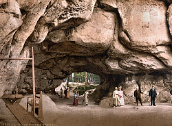

Kuhstall
Useful Information
 |
| Image: Kuhstall, painting: Christian Gottlob Hammer (1779-1864), etching: Johann Gottfried Frenzel (1782-1855). |
| Location: | Above the Kirnitzschtal (Kirnitzsch valley), south of the Lichtenhainer Wasserfall. Sächsische Schweiz. |
| Open: |
No restrictions. [2010] |
| Fee: |
free. [2010] |
| Classification: |
 Erosional cave Erosional cave
|
| Light: | n/a |
| Dimension: | L=24m, W=11m, H=17m. |
| Guided tours: | |
| Photography: | |
| Accessibility: | |
| Bibliography: | |
| Address: | |
| As far as we know this information was accurate when it was published (see years in brackets), but may have changed since then. Please check rates and details directly with the companies in question if you need more recent info. |
|
History
| 1824 | Berggasthaus built. |
Description
 |
| Image: the Kuhstall natural bridge, old postcard between 1901 and 1921. |
The Kuhstall (cattle-shed) is probably the most famous cave of the Elbsandsteingebirge (Elbe Sandstone Mountains). However, it should be better named a natural bridge or arch. The huge through cave goes through the Neuer Wildenstein (337m asl), a rock which was towered by castle Wildenstein during the 15th century. Today only very little remains of this castle. It is reached through the narrow cleft called Himmelsleiter (stairway to heaven).
|  |
| Image: the Kuhstall, postcard between 1890 and 1905. |
The arch became famous during the 19th century, when it was one of the main tourist attractions of this area. In 1824 a restaurant called Berggasthaus was built nearby, and the place was rather easy to reach on foot or with pack animals from the terminus of the Kirnitzschtalbahn (Kirnitzsch valley railroad). As often tourism was boosted by the development of the railroad. And the existence of a tavern helped also.
The reason why this arch is called Kuhstall (cattle-shed) is not clear, but there are two theories. One says the place was used by the locals to hide their cattle from marauding Swedish soldiers during the Thirty Years War. The other says it really was used as a cattle shed for stolen cattle, by the robber baron who lived on castle Wildenstein.
The cave formed along a horizontal layer in the rock. This layer has a higher amount of silt and hence collects the groundwater inside the rock. Clefts caused by tectonic movement, weaker rock, and the existence of water which caused cryofracturing (frost weathering) and solution of the matrix, created the cave.
 Search Google for "Kuhstall"
Search Google for "Kuhstall" Google Earth Placemark
Google Earth Placemark Kuhstall (Sächsische Schweiz) - Wikipedia
(
Kuhstall (Sächsische Schweiz) - Wikipedia
( )
){kind=link}